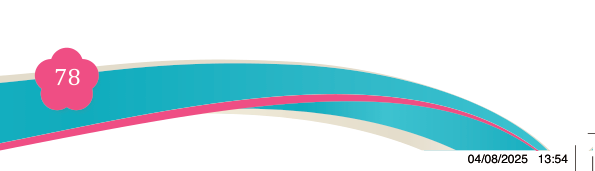

Fine Art for Secondary Schools

78

Student’s Book Form Two


Answer the following questions
4. Why do you think good composition is important in simple functional painting?

5. Explain specific qualities that make acrylic paint to be better used on a canvas.
6. How does atmospheric perspective affect someone’s painting?
7. Fill in the blanks.
(i) Acrylic paint finishing stage is the part where you ……………..forms as observed or imagined.
(ii) Before painting, artist must start by ………………..the idea of the image.
(iii) What makes painting functional is the way it has intended to ………….a particular function in daily life.
04/08/2025 13:54